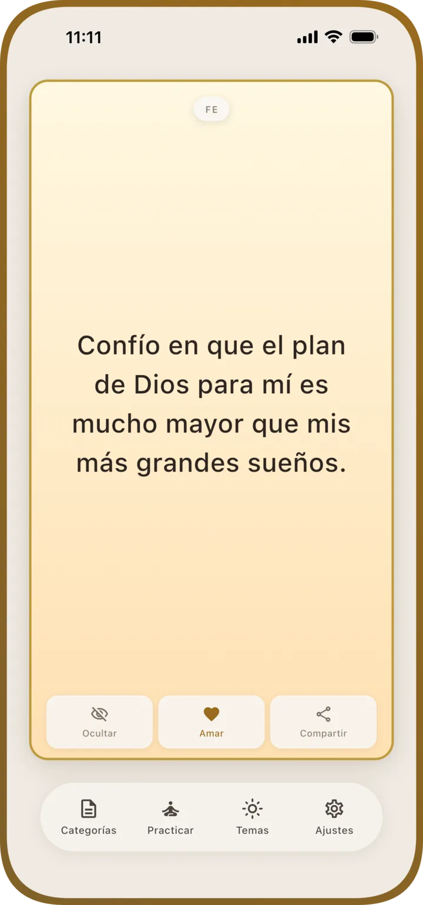
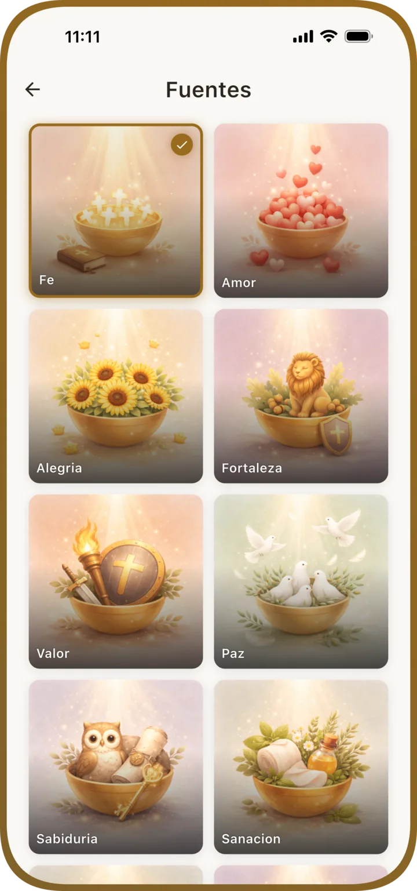
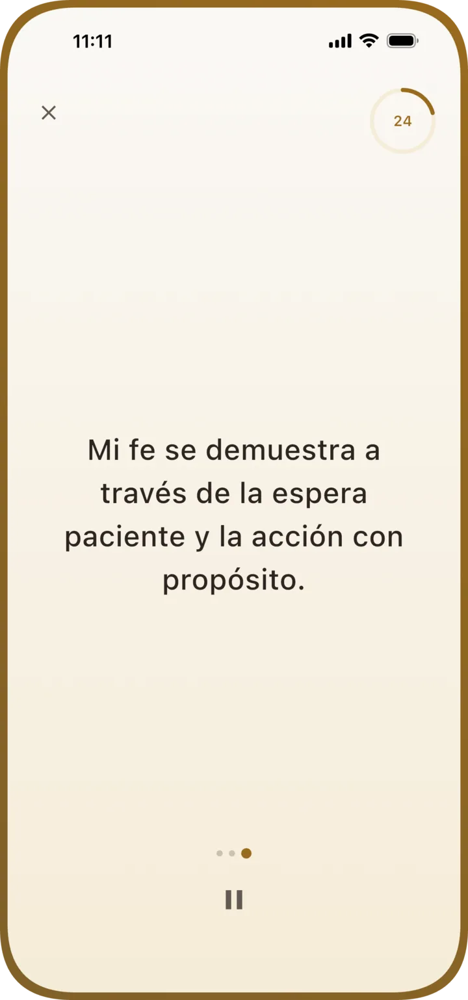
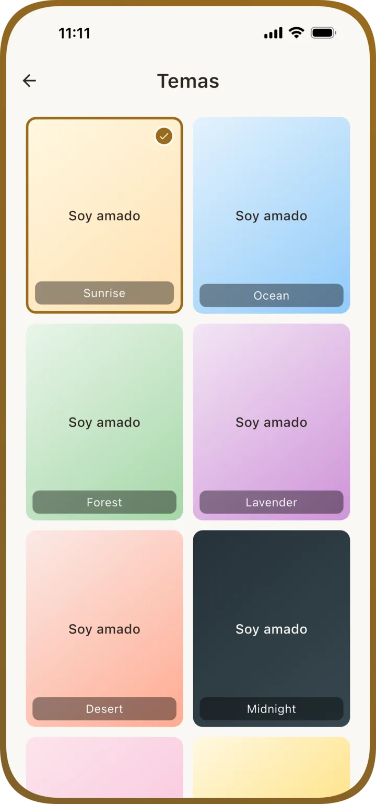

Manna.
Recoge Tu
Verdad Diaria.
Afirmaciones arraigadas en la Escritura para renovar tu mente, fortalecer tu fe y transformar tus mañanas.

La Práctica
¿Qué Son las Afirmaciones Cristianas?
Las afirmaciones cristianas son declaraciones habladas de las promesas de Dios y verdades bíblicas. A diferencia de los mantras genéricos de autoayuda, obtienen su poder de la Escritura — la Palabra inmutable del Creador que te conoce por tu nombre.
"Maravillosas son tus obras, y mi alma lo sabe muy bien."
Salmo 139:14"Todo lo puedo en Cristo que me fortalece."
Filipenses 4:13"Dios no me ha dado un espíritu de temor, sino de poder, de amor y de dominio propio."
2 Timoteo 1:7Cuando declaras la Palabra de Dios sobre tu vida, no estás manifestando — estás recordando. Estás alineando tu corazón con verdades que fueron declaradas sobre ti antes de que nacieras.
"No se amolden al mundo actual, sino sean transformados mediante la renovación de su mente."
Romanos 12:2
La App
Las promesas de Dios, hermosamente entregadas.
Cada detalle — de la tipografía a las transiciones — está diseñado para que cada afirmación se sienta escrita para ti.
Desliza afirmaciones diarias

20 categorías para cada temporada

Sesiones de práctica guiada

Temas diseñados a mano
Funciones
Una práctica diaria, no otra app más.
Tarjetas de Afirmación Diarias
Afirmaciones frescas basadas en la Escritura cada día. Desliza, guarda y comparte las que hablen a tu corazón.
20 Categorías de Vida
Desde Fe y Confianza hasta Sanidad, Propósito y Victoria. Encuentra afirmaciones que te encuentran donde estás.
Modo de Práctica Guiada
Sesiones de meditación con tiempo. Siéntate con cada afirmación, déjala calar hondo y construye un hábito que transforma.
Hermosos Temas
8 temas diseñados a mano más un creador personalizado. Haz que tu espacio de práctica se sienta como en casa.
Recordatorios Diarios
Notificaciones suaves y personalizables para construir una práctica consistente. Horarios que se adapten a tu ritmo.
Afirmaciones Personalizadas
Escribe las tuyas de la Escritura o las enseñanzas de tu pastor, e intégralas en tu práctica diaria.
Por Qué Manna
Verdad fresca cada mañana.
Una práctica que transforma.
Arraigadas en la Escritura
Cada afirmación proviene de la Palabra de Dios. Esto no es autoayuda — es declarar lo que tu Creador ya ha dicho sobre ti.
Renueva Tu Mente a Diario
Pequeños momentos de declaración crean transformación duradera. Un hábito diario que cambia cómo piensas, hablas y crees.
Construye Fe Inquebrantable
Cuando meditas en las promesas de Dios, la duda cede ante la confianza. No en ti mismo — en Aquel que te creó.
Hermosa y Sin Distracciones
Sin anuncios. Sin ruido. Sin algoritmos. Solo un espacio cálido y tranquilo para ti y la verdad de Dios.
Tu maná diario te espera.
Recoge Tu Verdad Diaria.